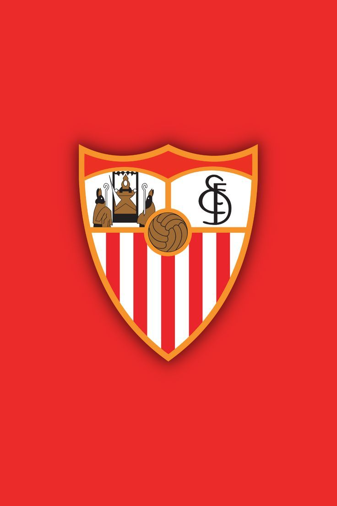
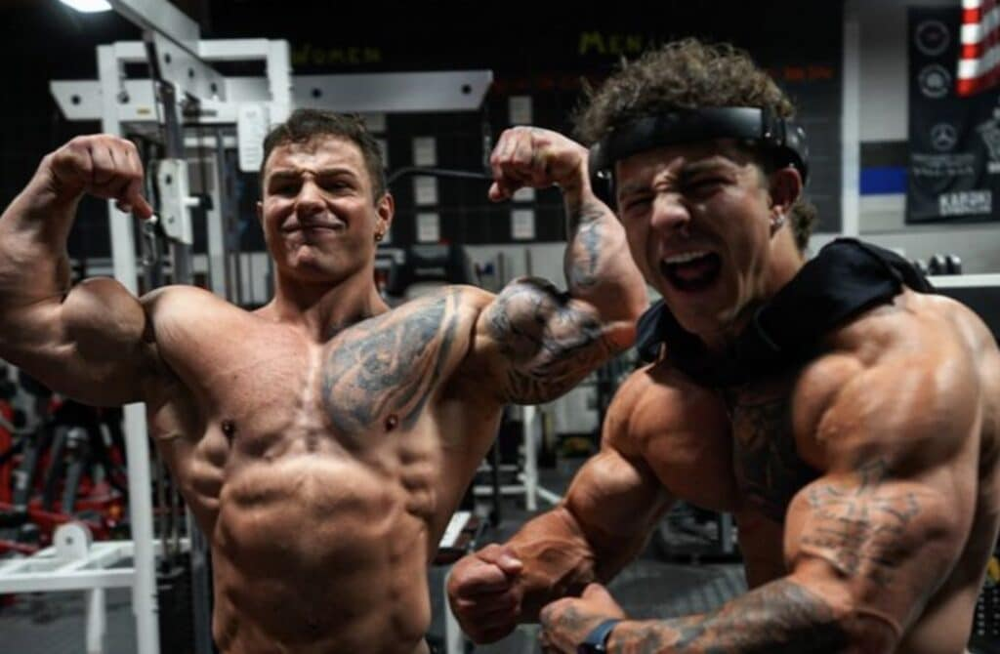

| Imagen | Descripción | Enlace |
|---|---|---|
|
|
La UFC (Ultimate Fighting Championship) es la principal organización de artes marciales mixtas del mundo. Reúne a los mejores luchadores en distintas categorías de peso y es conocida por su espectáculo, intensidad y técnica. | UFC Oficial |
|  | El Sevilla Fútbol Club es un equipo histórico de LaLiga española, fundado en 1890. Es reconocido por su espíritu competitivo, su afición apasionada y sus múltiples títulos europeos, especialmente en la UEFA Europa League. | Sevilla FC |
|  | Los Tren Twins son dos hermanos estadounidenses conocidos por su contenido fitness en redes sociales. Promueven el entrenamiento con pesas, la motivación y un estilo de vida saludable, mezclando humor y disciplina en sus vídeos. | Canal de los Tren Twins |
Esta tabla muestra tres temas de interés personal: deporte, fútbol y fitness.